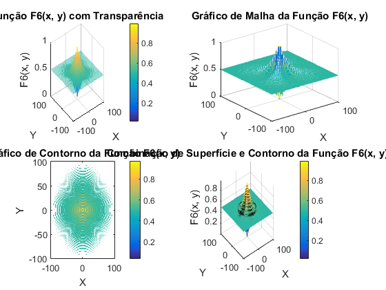

x = linspace(-100, 100, 100);
y = linspace(-100, 100, 100);
[X, Y] = meshgrid(x, y);
numerator = (sin(sqrt(X.^2 + Y.^2)).^2 - 0.5);
denominator = (1 + 0.001 * (X.^2 + Y.^2)).^2;
F6 = 0.5 - (numerator ./ denominator);
figure;
subplot(2, 2, 1);
surf(X, Y, F6, 'FaceAlpha', 0.5);
title('Função F6(x, y) com Transparência');
xlabel('X');
ylabel('Y');
zlabel('F6(x, y)');
shading interp;
colorbar;
subplot(2, 2, 2);
mesh(X, Y, F6);
title('Gráfico de Malha da Função F6(x, y)');
xlabel('X');
ylabel('Y');
zlabel('F6(x, y)');
subplot(2, 2, 3);
contour(X, Y, F6, 50);
title('Gráfico de Contorno da Função F6(x, y)');
xlabel('X');
ylabel('Y');
colorbar;
subplot(2, 2, 4);
surf(X, Y, F6);
hold on;
contour3(X, Y, F6, 20, 'LineColor', 'k');
title('Combinação de Superfície e Contorno da Função F6(x, y)');
xlabel('X');
ylabel('Y');
zlabel('F6(x, y)');
shading interp;
colorbar;
